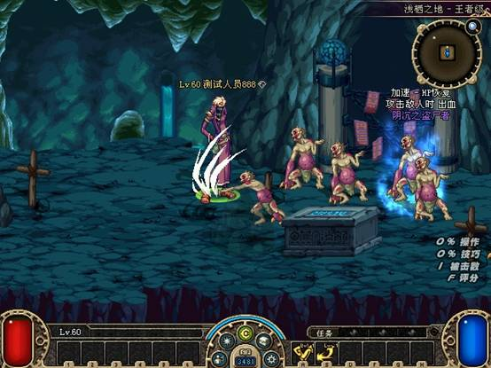
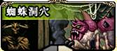
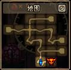
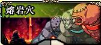
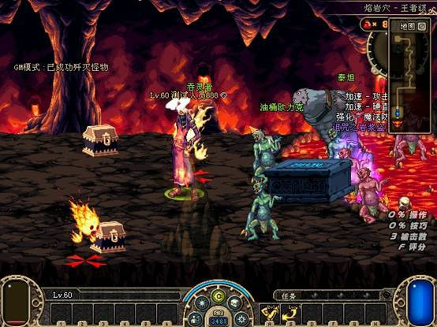
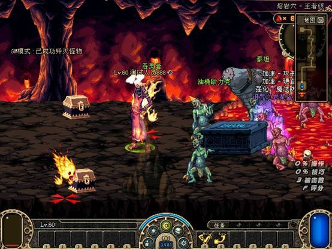

浅栖之地

暗精灵城镇突然爆发传染病， 大部分暗精灵受到感染并死去。 暗精灵们认为这是人类带来的灾难， 便向贝尔玛尔公国宣战。 暗精灵的炼金大师摩根为找出传染病的缘由， 独自进入浅栖之地， 但却失踪了……
地形分析

浅栖之地地下城全图共计18个房间，环形分布，BOSS位置与地下城入口房间成对角，最小通关房间为8，建议探索路线为纵向探索，可以节约不少疲劳值的消耗。
浅栖之地截图



蜘蛛洞穴
人类与暗精灵的战争一触即发， 人类绝对不是那些善用魔法的暗精灵的对手， 这几乎是一场可以预料到结局的战争！ 这样紧急关头， 那些被传染病感染的巨大蜘蛛和复活的恶灵， 又阻挡冒险家前进的路……
地形分析
蜘蛛洞穴地下城地形较复杂，共有房间数目为17个。
蜘蛛洞穴截图


熔岩穴
通往暗精灵圣地的熔岩穴与火焰圣地卡崖克火山的地脉相连， 据说很久前， 那里曾出现过一种怪异的炙热熔岩， 它不仅融化了各种生命体， 还使融化后的岩浆变成了有生命的怪物……现在地底压力喷出的熔岩， 使那里的盗尸者和僵尸出现了奇怪的异变……
地形分析

熔岩穴的地形是纵向长条形结构，共有房间数目13个，只要纵向一直探索即可。
熔岩穴截图
 
